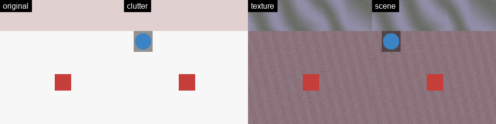
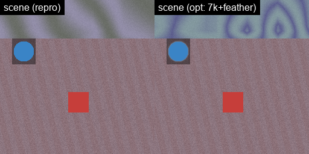
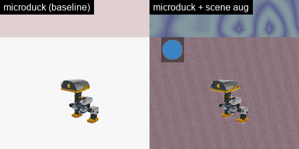

≈2×
DGX 相比本机的单帧增强速度
0.0000
本机 vs DGX 输出像素平均差
4
复现分支：original/clutter/texture/scene
98.2%
texture/scene 背景像素变化率
True
同 seed 确定性重放
1先给结论
- 仓库能复现，但不能“照着训练”：这是 6B 参数 VLA，官方配置 6×A800 80GB、两阶段 5 万+1 万步。单台 GB10（128GB 统一内存）做完整微调不现实。
- 可复现的是核心算法：场景增强分支（scene_augmentation.py）只依赖 numpy/torch/scipy，只改像素、不动 state/action/mask。我把它移植成 纯 numpy 版，DGX 系统环境即可跑。
- DGX 已实跑并验证：clutter 3.1ms、texture 10.5ms（本机 8.1 / 21.7ms），输出与本机 像素级完全一致。
- 与琶洲赛题的关系要说明白：A 赛道是「二次开发实操」（现场离线、禁云端 AI、统一轮式人形平台），不在现场跑 VLA 大模型。本复现的价值是赛前的感知鲁棒性数据增强与仿真泛化研究，不是比赛现场程序。
2赛题要点（A 赛道 · 二次开发技术创新）
任务
轮式人形平台（轮式底盘 + 人形半身 + 双指夹爪），赛前夹稳空托盘 → 备餐台抓两份瓶装水装盘 → 端盘导航到客人桌 → 逐份上饮并语音通知。
硬约束
- 现场离线，禁止联网求助或云端 AI
- 每队总赛时 90 分钟，正式运行 5 分钟/轮，最多两轮
- 提供导航/机械臂/夹爪/视觉/语音基础接口，不提供整套赛题程序
评分
- 基础任务 100 分：场景操作 75 + 任务五 15 + 任务六 10
- 考核启动定位、抓取装盘、端盘配送、上饮通知、过程稳定性
关键判断：这是传统机器人编程 + 视觉识别 + 任务调度，不是 VLA 推理赛道。VLA/场景增强只能作为赛前研究与数据工具。
3仓库分析
分支 feat/robotwin-scene-augmentation 基于 Robbyant/LingBot-VLA 2，训练用 RoboTwin 2.0 的 50 任务 × 50 clean 轨迹 = 2,500 episodes。
| 项目 | 配置 |
|---|---|
| 基座模型 | lingbot-vla-v2-6b（6B 参数） |
| 训练硬件 | 6 × A800 80GB |
| 阶段一 | 0 → 50,000 步，全量微调，无图像增强 |
| 阶段二 | 50,000 → 60,000 步，启用场景增强 + seen 指令采样 |
| 权重合并 | θ = 0.25×θ_50k + 0.75×θ_60k |
| 增强权重 | original 0.40 / clutter 0.35 / texture 0.10 / scene 0.15 |
| 环境 | Python 3.12、PyTorch 2.8、CUDA 12.8、FlashAttention 2.8.3 |
结论：完整训练复现需要 6 卡 A800 级算力；单台 GB10 只能复现算法模块与推理/小规模验证。
4复现结果
4.1 四分支对比（合成场景，256×256）

4.2 优化前后（scene 分支）

4.3 真实素材：microduck（“鸭子”）渲染图

4.4 可视化视频
5优化点（全部保持“只改像素”不变式）
| 编号 | 优化 | 效果 |
|---|---|---|
| O1 | 去 torch：_upsample 用 numpy 双线性替代 F.interpolate | 系统 Python + numpy/scipy/PIL 即可跑，无需 6B 环境与 CUDA |
| O2 | clutter 边缘羽化（feather=2px） | 消除 1px 硬拼接缝，粘贴更自然；feather=0 可完全复现原版 |
| O3 | 程序纹理 5 → 7 类（新增木纹、大理石） | 背景多样性提升，降低对单一纹理过拟合 |
| O4 | 高斯斑点纹理向量化 | 去掉 python 循环，单帧 texture 分支稳定在 10ms 级 |
6DGX 实测
| 分支 | 本机 (Win, Py3.13) | DGX (GB10, anaconda Py3.12) | 加速 |
|---|---|---|---|
| original | 7.3 ms | 4.7 ms | ≈1.6× |
| clutter | 8.1 ms | 3.1 ms | ≈2.6× |
| texture | 21.7 ms | 10.5 ms | ≈2.1× |
| scene | 20.2 ms | 9.6 ms | ≈2.1× |
一致性验证：三张输出图在本机与 DGX 上 像素级完全一致（identical=True，mean_abs_diff=0.0000），同 seed 确定性重放通过。
复现命令
# 本机（Windows，WorkBuddy python） cd E:\vla-lingbot\repro python demo.py # DGX（anaconda，纯 CPU） ssh nvidia@100.97.27.19 cd /home/nvidia/vla-lingbot/repro DUCK_IMG=./duck_src.png /home/nvidia/anaconda3/bin/python demo.py
7与琶洲 A 赛道的结合建议
能直接用的
- 赛前数据增强：把现场采集的备餐台/客人桌图像做 clutter/texture 增强，扩充视觉识别训练集，提升光照/背景变化下的抓取与定位鲁棒性。
- 仿真泛化验证：用增强后的场景检验视觉模块在“多干扰物、换桌面纹理”下的稳定性。
- 离线可部署：纯 numpy 版无重型依赖，可直接进赛前准备的离线环境。
不能指望的
- 现场不跑 VLA 大模型（赛题禁止联网/云端 AI，且平台只给基础接口）。
- 不要把这套 6B 训练流程当成比赛程序——它解决的是“感知数据多样性”，不是“端盘任务调度”。
务实路线：赛题主线用传统导航+视觉+状态机；VLA/场景增强放在赛前数据与鲁棒性研究，形成“算法研究 + 工程落地”的双线叙事。
源码：github.com/jason-xzs/lingbot-vla-v2（feat/robotwin-scene-augmentation）· 本页复现代码与效果图为本地生成
DGX：spark-a8d2（GB10 / 128GB / Tailscale 100.97.27.19）· 2026-11-02 · 鳌虾（WorkBuddy）
DGX：spark-a8d2（GB10 / 128GB / Tailscale 100.97.27.19）· 2026-11-02 · 鳌虾（WorkBuddy）